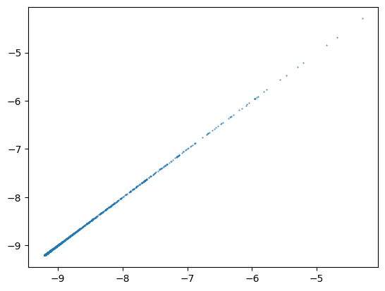

import math
import copy
import numpy as np
import scipy
import pandas as pd
import anndata
import scanpy as sc
import torch
import torch.nn as nn
import torch.nn.functional as F
import sklearn.decomposition
import matplotlib.pyplot as pltad = anndata.AnnData(
X = scipy.io.mmread('/home/anders/sds/sd17l002/u/anders/ifnagrko/ifnagrko_raw_counts.mtx.gz').tocsr(),
obs = pd.read_csv('/home/anders/sds/sd17l002/u/anders/ifnagrko/ifnagrko_obs.csv.gz'),
var = pd.read_csv('/home/anders/sds/sd17l002/u/anders/ifnagrko/ifnagrko_var.csv') )/home/anders/pyenv_torch/lib/python3.11/site-packages/anndata/_core/anndata.py:121: ImplicitModificationWarning: Transforming to str index.
warnings.warn("Transforming to str index.", ImplicitModificationWarning)
/home/anders/pyenv_torch/lib/python3.11/site-packages/anndata/_core/anndata.py:121: ImplicitModificationWarning: Transforming to str index.
warnings.warn("Transforming to str index.", ImplicitModificationWarning)ad.layers["counts"] = ad.X.copy()
sc.pp.normalize_total( ad )
sc.pp.highly_variable_genes(
ad,
flavor="seurat_v3",
n_top_genes=2000,
layer="counts",
subset=True,
)
adAnnData object with n_obs × n_vars = 18302 × 2000
obs: 'barcode', 'celltype', 'celltype1', 'celltype2', 'dpt_pseudotime', 'svz_frac', 'hto_sum', 'leiden', 'dbscan', 'frac_mito', 'counts', 'genes', 'scrub_score', 'age', 'genotype', 'UMAP1', 'UMAP2'
var: 'Unnamed: 0', 'gene_name', 'gene_id', 'highly_variable', 'highly_variable_rank', 'means', 'variances', 'variances_norm'
uns: 'hvg'
layers: 'counts'counts = torch.tensor( ad.layers["counts"].todense(), dtype=torch.float32 )
totals = counts.sum(1)
lncounts = torch.log( counts/totals[:,None] + 1e-4 )pca = sklearn.decomposition.PCA(20).fit( lncounts.numpy() )
pca.components_.shape(20, 2000)encoder_centers = lncounts.mean(0).clone().requires_grad_(True)
encoder_matrix = torch.tensor( pca.components_.T, requires_grad=True, dtype=torch.float32 )
decoder_matrix = torch.tensor( pca.components_, requires_grad=True, dtype=torch.float32 )
decoder_centers = lncounts.mean(0).clone().requires_grad_(True)latent = ( lncounts - encoder_centers ) @ encoder_matrix
latenttensor([[ 1.1630e+01, 2.7517e+01, 2.3102e+00, ..., 9.2211e-01,
-1.2445e+00, -5.8396e-01],
[-2.1500e+01, -4.7937e+00, -1.7415e+00, ..., 1.4030e+00,
-1.4130e+00, -2.9863e+00],
[ 2.3597e+01, -8.0399e+00, -1.2087e-01, ..., 2.4568e+00,
8.8939e-01, 4.5007e+00],
...,
[-1.3697e+01, -1.7856e+00, 1.7581e+01, ..., 2.4613e+00,
3.8042e-01, -9.2547e-01],
[-1.5142e+00, 9.7162e+00, -5.6973e+00, ..., -2.0212e+00,
2.5672e-02, -6.3906e-01],
[-1.4272e+01, -3.9927e+00, 2.3455e+01, ..., 1.0099e+00,
2.9713e-01, -2.1273e+00]], grad_fn=<MmBackward0>)lambda_hat = torch.exp( latent @ decoder_matrix + decoder_centers ) * totals[:,None]lambda_hattensor([[2.5049e-01, 2.0214e-01, 4.7346e-01, ..., 5.2245e+01, 2.4171e-01,
2.3430e-01],
[9.0665e-02, 2.3785e-01, 1.3015e-01, ..., 5.7705e+01, 9.3463e-02,
1.4912e+00],
[1.5239e-01, 1.5394e-01, 2.1735e+00, ..., 8.6692e-01, 1.5844e-01,
3.3152e-01],
...,
[1.5659e-01, 2.0947e-01, 1.1862e-01, ..., 1.6465e+02, 1.5789e-01,
7.7177e+00],
[3.8133e-02, 3.7210e-02, 5.0348e-02, ..., 4.0214e+00, 9.5131e-02,
5.5177e-02],
[1.5728e-01, 2.2616e-01, 1.6303e-01, ..., 9.0928e+01, 1.7404e-01,
6.9949e+00]], grad_fn=<MulBackward0>)countstensor([[ 0., 0., 0., ..., 46., 0., 0.],
[ 0., 0., 0., ..., 90., 0., 0.],
[ 0., 0., 0., ..., 0., 0., 0.],
...,
[ 0., 0., 0., ..., 109., 0., 12.],
[ 0., 0., 0., ..., 21., 0., 0.],
[ 0., 0., 0., ..., 151., 0., 9.]])alpha = .2**2nbprob = 1. / ( lambda_hat * alpha + 1. )log_likelihood = torch.lgamma( counts + 1./alpha ) - math.lgamma(1./alpha) - torch.lgamma( counts + 1 ) + counts * torch.log( 1 - nbprob ) + (1./alpha) * torch.log( nbprob )
log_likelihood.sum()tensor(-16732323., grad_fn=<SumBackward0>)log_likelihood = torch.lgamma( counts + 1./alpha ) - math.lgamma(1./alpha) - torch.lgamma( counts + 1 ) + \
torch.xlogy( counts, 1 - nbprob ) + torch.xlogy( 1./alpha, nbprob )
log_likelihood.sum()tensor(-16732323., grad_fn=<SumBackward0>)nbprob0 = 1. / ( counts * alpha + 1 )
log_likelihood_saturated = torch.lgamma( counts + 1./alpha ) - math.lgamma(1./alpha) - torch.lgamma( counts + 1 ) + \
torch.xlogy( counts, 1 - nbprob0 ) + torch.xlogy( 1./alpha, nbprob0 )
( -2 * (log_likelihood - log_likelihood_saturated ) ).mean().item()0.5815576314926147log_likelihood_part = counts * torch.log( 1 - nbprob ) + (1./alpha) * torch.log( nbprob )
loss = -log_likelihood_part.sum()
losstensor(54075896., grad_fn=<NegBackward0>)loss.backward()encoder_centers.gradtensor([-939.5082, 1316.0903, 3787.9824, ..., 7095.9502, -346.8978,
6605.7959])decoder_matrixtensor([[-4.3974e-06, -1.1479e-02, 5.7341e-02, ..., -8.9799e-02,
9.9221e-04, -6.2656e-02],
[ 1.4553e-03, -4.5472e-03, -4.3717e-02, ..., 1.2532e-02,
1.1846e-03, -3.7184e-02],
[-3.7185e-04, 1.1363e-02, -3.1827e-03, ..., 3.8812e-02,
-6.9147e-04, 6.2706e-02],
...,
[-4.8306e-03, 1.8585e-02, 1.8708e-02, ..., -5.7901e-02,
-7.0025e-04, 1.8238e-02],
[ 4.0338e-04, 3.7371e-02, 1.3643e-02, ..., 3.1685e-03,
-5.1020e-04, 1.1436e-02],
[-4.9728e-04, 1.7212e-03, -3.5354e-02, ..., 2.1039e-02,
-7.3830e-04, 1.2716e-01]], requires_grad=True)decoder_matrix.gradtensor([[ 1.0705e+04, 4.9684e+04, -1.3327e+05, ..., 1.1444e+04,
8.1080e+03, 2.1411e+05],
[ 3.1664e+03, 9.8356e+03, 3.3381e+04, ..., -5.4091e+03,
3.1639e+03, 4.1589e+04],
[ 6.3209e+03, -4.2251e+03, 6.2486e+03, ..., -4.0955e+04,
6.6417e+03, -6.2264e+04],
...,
[ 1.7448e+02, -1.0185e+03, -5.9606e+02, ..., -5.5355e+03,
3.9751e+01, -2.3006e+03],
[-9.8762e+01, -1.7503e+03, -1.7647e+03, ..., -5.6964e+03,
-6.9122e+01, -2.0445e+02],
[ 1.9211e+01, 2.7887e+02, 1.7133e+03, ..., 7.1400e+03,
6.0949e+01, -4.7210e+03]])with torch.no_grad():
encoder_centers -= 1e-8 * encoder_centers.grad
encoder_matrix -= 1e-8 * encoder_matrix.grad
decoder_matrix -= 1e-8 * decoder_matrix.grad
decoder_centers -= 1e-8 * decoder_centers.gradlatent = ( lncounts - encoder_centers ) @ encoder_matrix
lambda_hat = torch.exp( latent @ decoder_matrix + decoder_centers ) * totals[:,None]nbprob = 1. / ( lambda_hat * alpha + 1 )
log_likelihood_part = counts * torch.log( 1 - nbprob ) + (1./alpha) * torch.log( nbprob )
loss = -log_likelihood_part.sum()
losstensor(53987828., grad_fn=<NegBackward0>)optimizer = torch.optim.Adam( ( encoder_centers, encoder_matrix, decoder_matrix, decoder_centers ), lr=1e-8 )[tensor([-9.1620, -9.0162, -8.1960, ..., -4.8811, -9.1269, -7.6952],
device='cuda:0'),
tensor([[-0.0229, -0.0136, -0.0276, ..., 0.0174, 0.0304, -0.0231],
[-0.0061, 0.0132, 0.0337, ..., 0.0030, 0.0129, 0.0197],
[ 0.0642, -0.0506, -0.0197, ..., 0.0146, 0.0099, -0.0345],
...,
[-0.1027, 0.0014, 0.0586, ..., -0.0757, 0.0235, 0.0279],
[-0.0119, -0.0004, -0.0293, ..., 0.0207, 0.0335, -0.0244],
[-0.0655, -0.0440, 0.0801, ..., 0.0246, 0.0319, 0.1345]],
device='cuda:0'),
tensor([[-0.0149, -0.0324, 0.0714, ..., -0.0739, -0.0046, -0.0775],
[-0.0159, -0.0234, -0.0434, ..., 0.0194, -0.0099, -0.0539],
[-0.0206, 0.0141, -0.0156, ..., 0.0416, -0.0178, 0.0615],
...,
[ 0.0117, 0.0413, 0.0080, ..., -0.0390, 0.0284, 0.0251],
[ 0.0287, 0.0625, 0.0155, ..., 0.0161, 0.0276, 0.0330],
[-0.0288, -0.0220, -0.0378, ..., 0.0116, -0.0286, 0.1216]],
device='cuda:0'),
tensor([-9.2202, -9.0133, -8.1998, ..., -4.8273, -9.1867, -7.6519],
device='cuda:0')]encoder_centers = lncounts.mean(0).clone().requires_grad_(True)
encoder_matrix = torch.tensor( pca.components_.T, requires_grad=True, dtype=torch.float32 )
decoder_matrix = torch.tensor( pca.components_, requires_grad=True, dtype=torch.float32 )
decoder_centers = lncounts.mean(0).clone().requires_grad_(True)counts = counts.detach().cuda()
lncounts = lncounts.detach().cuda()
totals = totals.detach().cuda()
encoder_centers = encoder_centers.detach().cuda().requires_grad_(True)
encoder_matrix = encoder_matrix.detach().cuda().requires_grad_(True)
decoder_matrix = ( decoder_matrix.detach() + torch.randn_like(decoder_matrix)/1e5 ).cuda().requires_grad_(True)
decoder_centers = decoder_centers.detach().cuda().requires_grad_(True)
optimizer = torch.optim.Adam(
( encoder_centers, encoder_matrix, decoder_matrix, decoder_centers ),
#( encoder_matrix, decoder_matrix ),
lr=1e-3 )
nbprob0 = 1. / ( counts * alpha + 1 )
log_likelihood_saturated_part = torch.xlogy( counts, 1 - nbprob0 ) + torch.xlogy( 1./alpha, nbprob0 )
for step in range(100000):
latent = ( lncounts - encoder_centers ) @ encoder_matrix
lambda_hat = torch.exp( latent @ decoder_matrix + decoder_centers ) * totals[:,None]
nbprob = 1. / ( lambda_hat * alpha + 1 )
nbprob = torch.clamp( nbprob, 1e-5, 1-1e-5 )
log_likelihood_part = torch.xlogy( counts, 1 - nbprob ) + torch.xlogy( 1./alpha, nbprob )
#deviance = -2* ( log_likelihood_part - log_likelihood_saturated_part )
#deviance = torch.clamp( deviance, -1e-5, 100 )
loss = -log_likelihood_part.sum()
#loss = deviance.sum()
if torch.isnan(loss).item():
print( "nan loss" )
break
if step % 100 == 0:
with torch.no_grad():
#nbprob0 = 1. / ( counts * alpha + 1 )
#log_likelihood_saturated_part = torch.xlogy( counts, 1 - nbprob0 ) + torch.xlogy( 1./alpha, nbprob0 )
deviance = -2* (log_likelihood_part - log_likelihood_saturated_part )
print( ( deviance.mean().item(), deviance.median().item(), deviance.min().item(), deviance.max().item() ) )
prev = [ m.clone().detach() for m in (encoder_centers, encoder_matrix, decoder_matrix, decoder_centers) ]
optimizer.zero_grad()
loss.backward()
nn.utils.clip_grad_norm_((encoder_centers, encoder_matrix, decoder_matrix, decoder_centers), max_norm=1.0)
optimizer.step()(0.5815567374229431, 0.2480899691581726, -1.52587890625e-05, 55982.703125)
(0.3472716510295868, 0.01691269688308239, -3.0517578125e-05, 967.3753662109375)
(0.3406349718570709, 0.013564876280725002, -4.57763671875e-05, 495.1505126953125)
(0.33918288350105286, 0.012897128239274025, -1.52587890625e-05, 420.5322570800781)
(0.3385719060897827, 0.012658648192882538, -1.52587890625e-05, 354.87255859375)
(0.33810749650001526, 0.012473827227950096, -4.57763671875e-05, 337.72418212890625)
(0.3377564549446106, 0.012348627671599388, -4.57763671875e-05, 334.24237060546875)
(0.33765503764152527, 0.012171745300292969, -3.0517578125e-05, 333.337158203125)
(0.3375290334224701, 0.012098225764930248, -1.52587890625e-05, 327.39349365234375)
(0.33724069595336914, 0.01214592158794403, -2.288818359375e-05, 325.6202392578125)
(0.3371332287788391, 0.012116111814975739, -3.0517578125e-05, 323.88092041015625)
(0.3370274007320404, 0.012092264369130135, -1.52587890625e-05, 322.64410400390625)
(0.3369239568710327, 0.012062454596161842, -3.0517578125e-05, 321.851318359375)
(0.3368293046951294, 0.012008797377347946, -1.52587890625e-05, 322.12860107421875)
(0.3367539644241333, 0.011996873654425144, -1.52587890625e-05, 322.1785888671875)
(0.33663567900657654, 0.01199091225862503, -1.52587890625e-05, 321.08489990234375)
(0.3365321457386017, 0.01199091225862503, -3.0517578125e-05, 319.23504638671875)
(0.33644694089889526, 0.011961102485656738, -3.0517578125e-05, 316.89520263671875)
(0.33644938468933105, 0.012104188092052937, -3.0517578125e-05, 316.4998779296875)
(0.3362773358821869, 0.012032645754516125, -3.0517578125e-05, 314.3897705078125)
(0.3361998498439789, 0.011967064812779427, -1.52587890625e-05, 315.83551025390625)
(0.33612731099128723, 0.01195514015853405, -1.52587890625e-05, 315.2091064453125)
(0.3360527753829956, 0.011937255039811134, -6.103515625e-05, 314.0787353515625)
(0.3361693024635315, 0.011931292712688446, -1.52587890625e-05, 311.969970703125)
(0.33593621850013733, 0.011943216435611248, -4.57763671875e-05, 312.09722900390625)
(0.3359326720237732, 0.011925331316888332, -3.0517578125e-05, 315.652099609375)
(0.33590105175971985, 0.011899948120117188, -1.52587890625e-05, 313.19268798828125)
(0.3358522355556488, 0.011895522475242615, -3.0517578125e-05, 312.794677734375)
(0.3358103334903717, 0.011877636425197124, -3.0517578125e-05, 312.1876220703125)
(0.33580291271209717, 0.011823979206383228, -3.0517578125e-05, 312.38104248046875)
(0.33572331070899963, 0.011806094087660313, -1.52587890625e-05, 310.75384521484375)
(0.33587875962257385, 0.011740513145923615, -1.52587890625e-05, 313.41900634765625)
(0.3357557952404022, 0.01192474365234375, -1.52587890625e-05, 310.56475830078125)KeyboardInterrupt: deviancetensor([[0.0167, 0.0332, 1.2245, ..., 0.1054, 0.0273, 0.0978],
[0.0211, 1.3585, 0.1299, ..., 1.5236, 0.0200, 4.5722],
[0.0169, 0.0289, 4.9223, ..., 3.2385, 0.0414, 0.7346],
...,
[0.0203, 0.2231, 0.1014, ..., 3.9115, 0.0329, 0.0523],
[0.0132, 0.0195, 0.0203, ..., 3.5928, 0.2352, 0.0882],
[0.0171, 0.3543, 0.1363, ..., 1.6039, 0.0327, 0.0080]],
device='cuda:0', grad_fn=<MulBackward0>)cur = ( encoder_centers, encoder_matrix, decoder_matrix, decoder_centers )
encoder_centers, encoder_matrix, decoder_matrix, decoder_centers = prevfor m in prev:
m.requires_grad_(True)latent = ( lncounts - encoder_centers ) @ encoder_matrix
lambda_hat = torch.exp( latent @ decoder_matrix + decoder_centers ) * totals[:,None]
nbprob = 1. / ( lambda_hat * alpha + 1 )
nbprob = n
log_likelihood_part = torch.xlogy( counts, 1 - nbprob ) + torch.xlogy( 1./alpha, nbprob )
deviance = -2* ( log_likelihood_part - log_likelihood_saturated_part )
deviance = torch.clamp( deviance, -50, 0 )
loss = -log_likelihood_part.sum()loss.backward()nbprob[:,630]tensor([0.9622, 0.9812, 0.8026, ..., 0.9776, 1.0000, 0.9652], device='cuda:0',
grad_fn=<SelectBackward0>)plt.scatter( lncounts.mean(0).cpu().detach(), decoder_centers.cpu().detach(), s=.2 )
import torch
dim1 = 200
class Autoencoder(nn.Module):
def __init__(self):
super(Autoencoder, self).__init__()
self.encoder = nn.Sequential(
nn.Linear(2000, dim1),
nn.BatchNorm1d(dim1),
nn.ReLU(),
nn.Linear(dim1, 20),
nn.BatchNorm1d(20),
#nn.ReLU()
)
self.decoder = nn.Sequential(
nn.Linear(20, dim1),
nn.BatchNorm1d(dim1),
nn.ReLU(),
nn.Linear(dim1, 2000),
#nn.BatchNorm1d(2000),
#nn.ReLU()
)
def forward(self, x):
x = self.encoder(x)
x = self.decoder(x)
return x
model = Autoencoder().cuda()
counts = torch.tensor( ad.layers["counts"].todense(), dtype=torch.float32 ).cuda()
totals = counts.sum(1)
lncounts = torch.log(counts / totals[:, None] + 1e-4)
gene_means = lncounts.mean(0).detach()
eta_hat = model( lncounts - gene_means )
lambda_hat = torch.exp( eta_hat + gene_means ) * totals[:,None]
alpha = .1**2
nbprob = 1. / (lambda_hat * alpha + 1)
nbprob = torch.clamp( nbprob, 1e-5, 1-1e-5 )
log_likelihood_part = torch.xlogy(counts, 1 - nbprob) + torch.xlogy(1. / alpha, nbprob)
loss = -log_likelihood_part.sum()
losstensor(1.1175e+08, device='cuda:0', grad_fn=<NegBackward0>)model = Autoencoder().cuda()
optimizer = torch.optim.Adam( model.parameters(), lr=1e-4, eps=1e-3 )
num_epochs = 10000
# Training loop
for epoch in range(num_epochs):
model.train()
optimizer.zero_grad()
# Forward pass
eta_hat = model( lncounts - gene_means )
lambda_hat = torch.exp( eta_hat + gene_means ) * totals[:,None]
# Compute negative binomial loss
alpha = .1**2
nbprob = 1. / (lambda_hat * alpha + 1)
nbprob = torch.clamp( nbprob, 1e-5, 1-1e-5 )
log_likelihood_part = torch.xlogy(counts, 1 - nbprob) + torch.xlogy(1. / alpha, nbprob)
#loss = -log_likelihood_part.sum()
ncells = log_likelihood_part.shape[0]
indices = torch.randperm(ncells)[:int(ncells * 0.5)]
loss = -log_likelihood_part[indices,:].sum()
if torch.isnan(loss).item():
print( "loss is nan" )
break
# Backward pass and optimization
prev_model = copy.deepcopy(model)
loss.backward()
optimizer.step()
# Print loss for every epoch
if epoch % 100 == 0:
print(f'Epoch [{epoch+1}/{num_epochs}], Loss: {loss.item():.4f}')
with torch.no_grad():
log_likelihood = torch.lgamma( counts + 1./alpha ) - math.lgamma(1./alpha) - torch.lgamma( counts + 1 ) + \
torch.xlogy( counts, 1 - nbprob ) + torch.xlogy( 1./alpha, nbprob )
nbprob0 = 1. / ( counts * alpha + 1 )
log_likelihood_saturated = torch.lgamma( counts + 1./alpha ) - math.lgamma(1./alpha) - torch.lgamma( counts + 1 ) + \
torch.xlogy( counts, 1 - nbprob0 ) + torch.xlogy( 1./alpha, nbprob0 )
deviance = -2* (log_likelihood - log_likelihood_saturated )
print( ( deviance.mean().item(), deviance.median().item() ) )Epoch [1/10000], Loss: 55641060.0000
(2.377359628677368, 0.27460822463035583)
Epoch [101/10000], Loss: 45340408.0000
(1.212778925895691, 0.15660692751407623)
Epoch [201/10000], Loss: 41378816.0000
(0.7834348082542419, 0.106899693608284)
Epoch [301/10000], Loss: 39834776.0000
(0.6122679710388184, 0.08111453056335449)
Epoch [401/10000], Loss: 39382276.0000
(0.5320304036140442, 0.06471727043390274)
Epoch [501/10000], Loss: 38694312.0000
(0.4885430932044983, 0.05359175428748131)
Epoch [601/10000], Loss: 38619464.0000
(0.4614768624305725, 0.04572198912501335)
Epoch [701/10000], Loss: 38225920.0000
(0.4425472915172577, 0.04007025435566902)
Epoch [801/10000], Loss: 38140004.0000
(0.42818889021873474, 0.03577790781855583)
Epoch [901/10000], Loss: 38014160.0000
(0.4166598916053772, 0.03245140239596367)
Epoch [1001/10000], Loss: 38198444.0000
(0.4070424437522888, 0.029804542660713196)
Epoch [1101/10000], Loss: 38003936.0000
(0.3988170623779297, 0.0276107769459486)
Epoch [1201/10000], Loss: 38060884.0000
(0.3916913568973541, 0.025798555463552475)
Epoch [1301/10000], Loss: 37731856.0000
(0.3854571580886841, 0.024263858795166016)
Epoch [1401/10000], Loss: 37671012.0000
(0.3799617290496826, 0.022961027920246124)
Epoch [1501/10000], Loss: 37775160.0000
(0.3751099109649658, 0.021816490218043327)
Epoch [1601/10000], Loss: 37805012.0000
(0.37080007791519165, 0.020791180431842804)
Epoch [1701/10000], Loss: 37791608.0000
(0.3669433295726776, 0.019885096698999405)
Epoch [1801/10000], Loss: 37540480.0000
(0.36348432302474976, 0.01909824088215828)
Epoch [1901/10000], Loss: 37874628.0000
(0.3603724241256714, 0.01838291808962822)
Epoch [2001/10000], Loss: 37563600.0000
(0.35756102204322815, 0.01771528460085392)
Epoch [2101/10000], Loss: 37499528.0000
(0.35500863194465637, 0.017119185999035835)dfl = deviance.cpu().numpy().flatten()
dfl.sort()
dflarray([-1.5258789e-05, -1.5258789e-05, -1.5258789e-05, ...,
4.7333188e+02, 5.7289001e+02, 6.2203540e+02], dtype=float32)model = Autoencoder().cuda()
alpha = .1**2
optimizer = torch.optim.Adam( model.parameters(), lr=1e-2 )
num_epochs = 10000
# Create DataLoader
dataset = torch.utils.data.TensorDataset( lncounts, counts )
dataloader = torch.utils.data.DataLoader( dataset, batch_size=64, shuffle=True )
# Training loop
for epoch in range(num_epochs):
model.train()
epoch_loss = 0
for batch_lncounts, batch_counts in dataloader:
optimizer.zero_grad()
# Forward pass
eta_hat = model( batch_lncounts - gene_means )
lambda_hat = torch.exp( eta_hat + gene_means ) * batch_counts.sum(1)[:,None]
# Compute negative binomial loss
nbprob = 1. / (lambda_hat * alpha + 1)
log_likelihood_part = torch.xlogy( batch_counts, 1 - nbprob ) + torch.xlogy( 1. / alpha, nbprob )
loss = -log_likelihood_part.sum()
# Backward pass and optimization
loss.backward()
optimizer.step()
# Print loss
if epoch % 50 == 0:
model.eval()
print(f'Epoch [{epoch+1}/{num_epochs}], Loss: {loss.item():.4f}')
with torch.no_grad():
eta_hat = model( lncounts - gene_means )
lambda_hat = torch.exp( eta_hat + gene_means ) * counts.sum(1)[:,None]
nbprob = 1. / (lambda_hat * alpha + 1)
log_likelihood = torch.lgamma( counts + 1./alpha ) - math.lgamma(1./alpha) - torch.lgamma( counts + 1 ) + \
torch.xlogy( counts, 1 - nbprob ) + torch.xlogy( 1./alpha, nbprob )
nbprob0 = 1. / ( counts * alpha + 1 )
log_likelihood_saturated = torch.lgamma( counts + 1./alpha ) - math.lgamma(1./alpha) - torch.lgamma( counts + 1 ) + \
torch.xlogy( counts, 1 - nbprob0 ) + torch.xlogy( 1./alpha, nbprob0 )
deviance = -2* (log_likelihood - log_likelihood_saturated )
print( ( deviance.mean().item(), deviance.median().item() ) )Epoch [1/10000], Loss: nan
(nan, nan)KeyboardInterrupt: batch_counts.sum(1).shapetorch.Size([64])